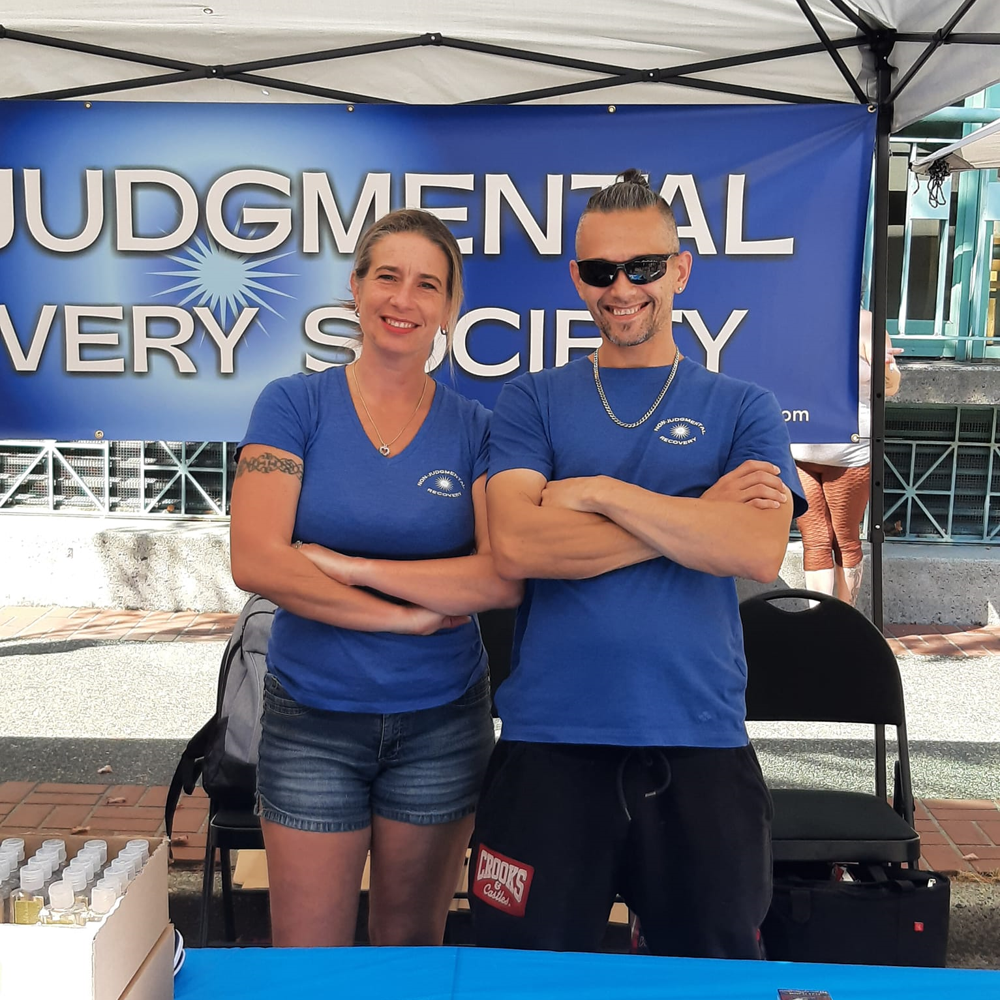

A Universal Approach to Recovery

The Non-Judgmental Recovery Society believes that there is value in all
Recovery Programs. We have seen evidence among our peers that successful,
long-term Recovery is more closely tied to the Connections and Support
Systems one builds than to the specific Recovery Program one chooses to
follow. We believe that there are Universal Principles that are essential in
Recovery and that these Principles can be presented and discussed for their
merits without being tied to any specific Program.